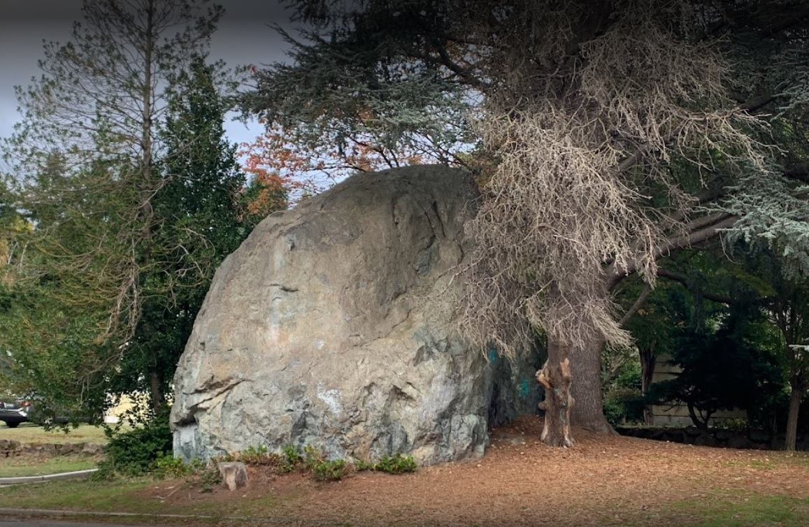
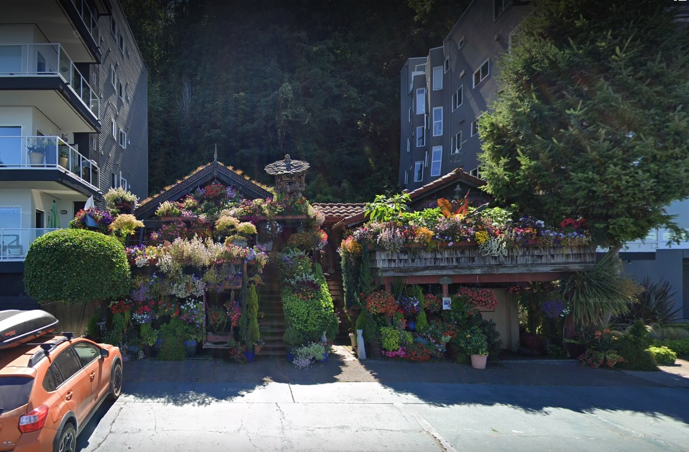

Unusual Attractions for Unusual People
Blurb here.
Favorite Attractions
- 
Wedgewood Rock
Intersection of NE 72nd St and 28th Ave NE, Seattle WA 98115The Wedgewood Rock is a 20 ft tall, 700-ton glacial erratic."Glacial erratic" refers to rocks that have been transported by ice and deposited elsewhere.
- 
Alki Flower Houses
1400 Alki Ave SW, Seattle WA 98116The Alki Flower houses were originally built in 1914. Owner Randi Stone (purchased 1989) can be credited with the creation of the colorful outdoor garden.
Visit in June when the flowers are blooming